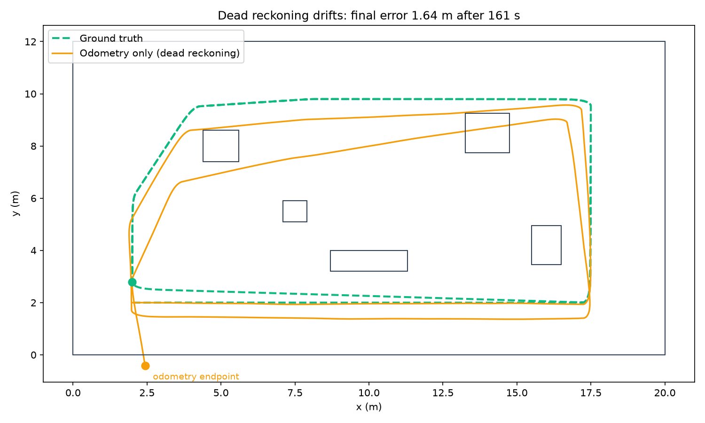

4.1航迹推算：用轮子猜位置
里程计（odometry）来自电机编码器：轮子每转一圈输出固定数量的脉冲， 除以轮径和轮距就能换算出"底盘前进了多少、转了多少"。把每一步的运动累加起来推算当前位姿， 叫航迹推算（dead reckoning）——这个名字来自航海时代："dead" 是 "deduced" 的缩写讹传， 即"从已知推未知"。
在第 3 章的模型里，里程计每步收到的测量是：
然后像真值一样积分。关键区别在于：真值的运动每一步是独立的（打滑不会累积）， 而里程计的位姿是"从起点累积到现在"的积分——每一步的误差都永远留在历史里。
4.2漂移为什么会滚雪球：一个 3 行的推导
最要命的是角速度误差。它不直接让位置出错，而是让"朝向"出错； 朝向错了，之后每一步前进都会往错误的方向走——误差被"路径长度"放大。
定量算一下。角速度噪声每步独立，积分 $t$ 步后朝向误差：
位置误差近似为"累计路径长 × 朝向误差"：
这就是航迹推算的死刑判决：位置误差按 $t^{1.5}$ 增长，永无上界。 课程参数下（$v=0.55$ m/s，$\sigma_\omega = 0.055$ rad/s，$\Delta t = 0.05$ s）， 跑 161 秒、87 米后的终点误差约 1.6 m——上方仿真里你刚刚亲眼看到。

- 轮径误差：标称 100 mm 的轮子实际 99.2 mm → 系统性走短 0.8%（可标定）
- 轮距误差：轮距不准 → 任何直线行驶都悄悄转偏（可标定）
- 打滑与地面：地毯、水渍、急转 —— 随机、不可标定（只能靠 SLAM 兜底）
4.3第一个经典 bug：角度回绕
朝向 $\theta$ 存在天然的"周期歧义"：+179° 与 −179° 其实只差 2°。直接相减会得到 358°， 让任何基于"角度误差"的控制器瞬间发疯。所有涉及角度差的地方都必须经过归一化：
def wrap(a):
"""把任意角度归一化到 (-π, π]"""
return (a + np.pi) % (2 * np.pi) - np.pi
heading_err = wrap(np.arctan2(dy, dx) - theta) # ✔ 永远取最短转角这句话在课程代码里出现了 6 次（控制器、ICP、位姿图残差、回环检测……）。 当你发现机器人"莫名原地打转"时，第一反应就该是搜代码里缺了哪一处 wrap。
4.4里程计虽然漂，但并不没用
看到这里你可能想：既然必然漂移，还要里程计干嘛？——因为漂移是"慢性病"，短期很准。
- 短时相对运动可信：0.1 s 内的位移误差微乎其微。所以里程计给 ICP 提供"初值"（第 5 章）、 给关键帧筛选提供依据（第 8 章）——都是只用它的"短期准确性"。
- 测量的是"运动"而非"位置"：漂移来自积分；两帧之间的增量 $\Delta$ 误差很小。 位姿图优化（第 7 章）用的正是这些可靠的相对增量，配合偶尔的回环来"钉死"长期漂移。
里程计：快、糙、无遗漏（每步都有）。激光：准、慢、只看到局部。 后续所有章节都是在设计"如何让这两者各出所长"——里程计当骨架，激光当矫正器。
4.5动手实验
- 在上方仿真里把噪声调到 3×，观察 2 圈后的漂移是否约等于 1× 时的 3 倍？（提示：$\sigma_p \propto \sigma_\omega$，是线性关系。）
- 用 Python 验证 $t^{1.5}$ 律：
run_slam.py里的err_odom_full曲线（生成的 fig_ate.png 中橙色线）。 在对数坐标下画 log(err)–log(t)，斜率应接近 1.5（中段；两端受路径几何影响会偏离）。 - 思考题：如果里程计的误差是系统性的（比如轮子实际比标称小 1%），漂移会是什么形状？ （答案在下面练习 2。）
- 能推导/复述漂移 ∝ $t^{1.5}$ 的来源（随机游走 × 路径放大）
- 玩过漂移仿真并观察到"误差滚雪球"现象
- 知道 wrap() 解决什么问题，会在代码里检查它
- 能说出里程计"短期准、长期漂"的分工，以及它在后续章节的两个用途
练习 1 · 数值验证随机游走
errs = [] 循环 20 个种子跑 60 s，记录 std。
理论值 $\sigma_\theta(60) = 0.055 \times 0.05 \times \sqrt{1200} \approx 0.095$ rad。
多种子实验均值应落在 0.09–0.10 rad——单次实验天然有涨落（样本量 1200 步）。